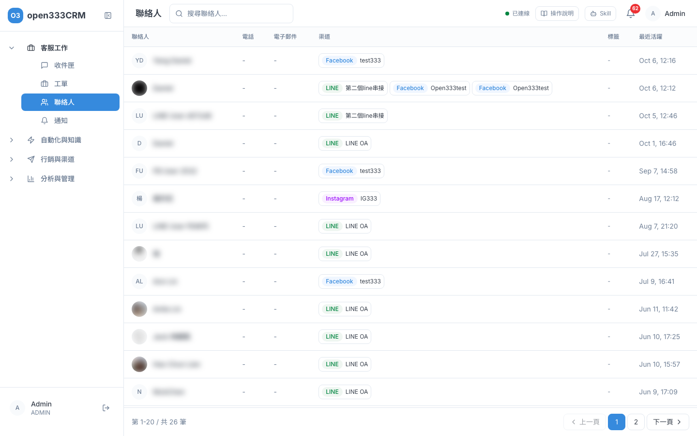
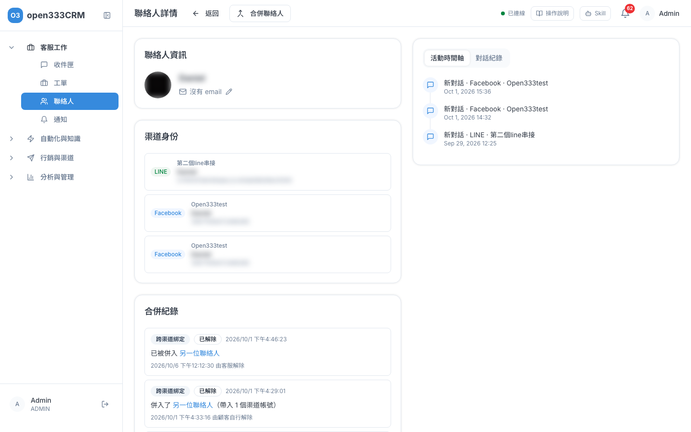
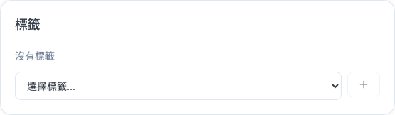
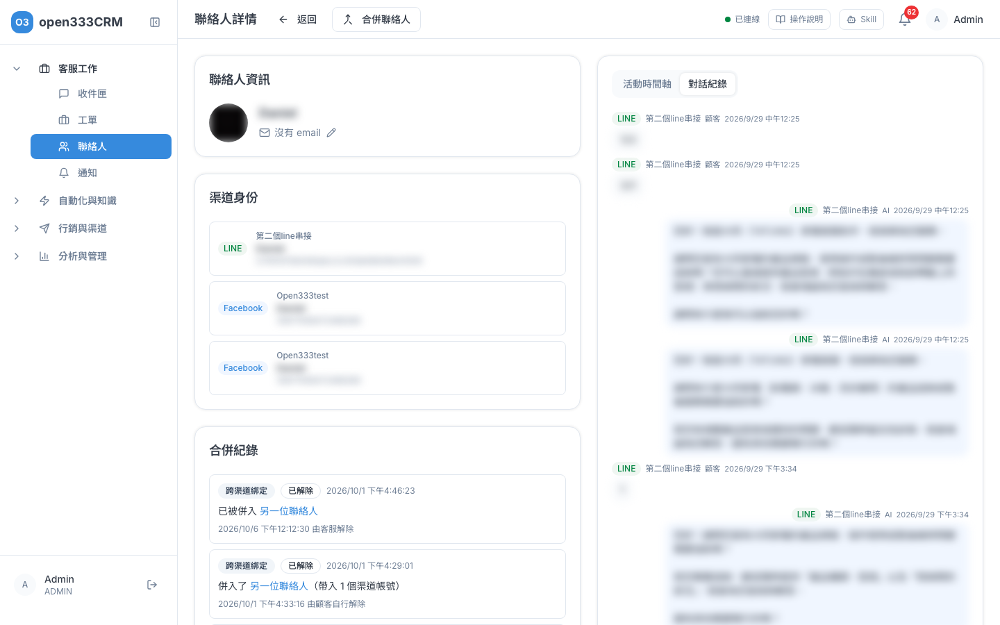
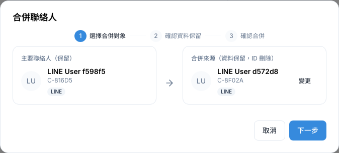
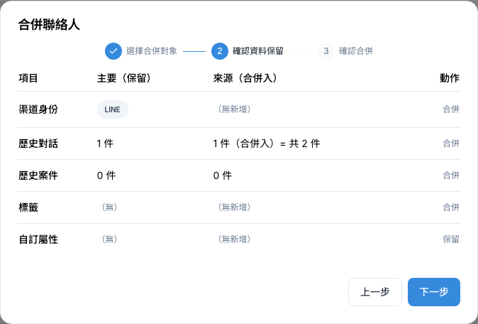
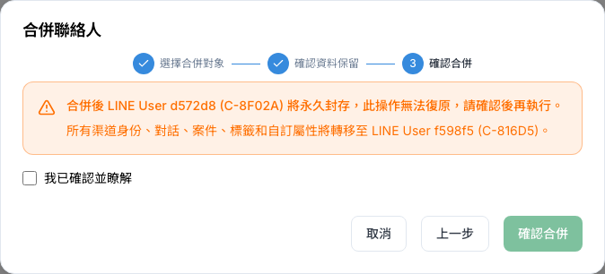
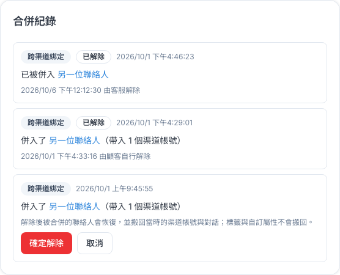

聯絡人
所有客人的名冊。一位客人可能同時從 LINE、Facebook、Instagram 找你，這裡把他的帳號、標籤、對話和工單收在同一個地方。
1 這頁能做什麼
客人第一次從任何渠道傳訊息進來，系統就會自動幫他建一筆聯絡人，你不需要手動新增。打開聯絡人，你可以在回覆前先看清楚「這個人是誰、從哪裡來、以前問過什麼」。如果同一個人被分成兩筆，也可以在這裡合併。
2 聯絡人列表與搜尋
側欄點「客服工作 → 聯絡人」，就會看到所有客人的表格，最近有動靜的排在最上面。
- 側欄點「聯絡人」。
- 在畫面上方的「搜尋聯絡人...」輸入關鍵字。打完停一下就會自動搜尋，不用按 Enter。
- 點任一列，打開這位客人的詳情。
- 資料超過 20 筆時，用右下角的「上一頁」「下一頁」翻頁。

| 欄位 | 說明 |
|---|---|
| 聯絡人 | 頭像與名稱。沒有名稱時顯示「未知」 |
| 電話、電子郵件 | 客人留下的聯絡方式，沒有就顯示「-」 |
| 渠道 | 客人用哪個渠道、哪個帳號找你，例如「LINE 總店 LINE OA」。同一人有好幾個帳號會並排顯示 |
| 標籤 | 貼在這位客人身上的標籤 |
| 最近活躍 | 客人最近一次有動靜的時間 |
為什麼有些人沒出現：列表只列出至少有一個 LINE、Facebook 或 Instagram 帳號的客人。只在網站聊天視窗（WebChat）聊過的訪客，以及已經被合併掉的那一筆，都不會出現在這裡。
3 聯絡人詳情
點進一位客人，左邊是他的資料，右邊是他跟你們往來的歷史。右上角有「返回」與「合併聯絡人」。

| 區塊 | 可以看到什麼 | 能不能改 |
|---|---|---|
| 聯絡人資訊 | 頭像、名稱、電話、Email | 只有 Email 可以改（見第 4 節）。名稱來自客人的 LINE／FB／IG 帳號；電話由客人自己透過手機登記連結填寫 |
| 渠道身份 | 客人在每個渠道的帳號：渠道類型、是哪一個官方帳號或粉專、客人在那邊的暱稱 | 不能改 |
| 合併紀錄 | 這位客人跟誰合併過、怎麼合併的（見第 8 節） | 可以解除合併 |
| 自訂屬性 | 額外的資料，例如會員等級。有資料才會出現這一塊 | 目前只能看，不能在這裡新增或修改 |
| 標籤 | 貼在這位客人身上的標籤 | 可以加、可以移除（見第 5 節） |
4 補上或修改 Email
客人在電話或對話中告訴你 Email，你可以直接幫他填上。
- 在「聯絡人資訊」裡，點 Email 旁邊的鉛筆圖示。
- 輸入 Email，按「儲存」。想清掉就把欄位清空再按「儲存」。不想改了按「取消」。
- 儲存成功後會直接回到顯示狀態，沒有另外的成功提示。
如果這個 Email 已經屬於另一位聯絡人，系統會出現黃色提示，讓你選：
| 按鈕 | 什麼時候用 |
|---|---|
| 與「某某」合併 | 你確定兩筆是同一個人。會直接打開合併視窗，並幫你選好對方（流程見第 7 節）。合併完成後 Email 才會寫進來 |
| 仍要儲存 | 兩人真的共用同一個 Email（例如夫妻共用）。兩筆都會留著，各自有這個 Email |
| 取消 | 先不改 |
5 標籤與 VIP
標籤就像便利貼，幫客人分類，例如「VIP」「已購買」「待回訪」。之後可以拿來分群發廣播，也能當自動化規則的條件。

- 在「標籤」卡片點「選擇標籤...」，選一個標籤。
- 按右邊的「＋」，標籤就貼上了。
- 要拿掉標籤，點標籤右邊的「×」。這個動作不會再問一次，點了就移除。
VIP 標籤
把重要客人貼上 VIP 標籤，自動化規則就能用「聯絡人是 VIP」當條件，對他們特別處理，例如 VIP 一來訊息就通知主管、VIP 的工單快逾期時提早升級（見「05 · 自動化」）。
6 活動時間軸與對話紀錄
詳情頁右邊有兩個分頁，幫你在回覆前快速掌握這位客人的來龍去脈。
活動時間軸
最新的排在最上面，列出這位客人：
| 類型 | 畫面上的樣子（範例） |
|---|---|
| 新對話 | 新對話 · LINE · 總店 LINE OA |
| 工單 | 建立案件「冰箱維修」· 處理中 |
| 工單變化 | 狀態變更、指派、升級等 |
| 標籤 | 標籤「VIP」已加入 |
對話紀錄
把這位客人在各個渠道的訊息依時間排成一條，合併過的客人特別好用：LINE 和 Facebook 的對話會出現在同一個畫面。

- 一開始顯示最近 50 則，按上方「載入更早的訊息」可以往前看。
- 圖片、影片、語音、檔案、貼圖會用「[圖片]」「[影片]」這類文字代替。
- 這裡只能看。要回覆客人，請到收件匣。
- 如果客人在你看不到的渠道也有對話，底下會寫「另有 N 段其他渠道的對話，你沒有權限查看」。
7 合併重複的聯絡人
同一位客人先用 LINE、後來又從 Facebook 找你，系統可能一開始認不出來，把他當成兩個人。合併之後，兩邊的帳號、對話、工單都會收到同一筆，客服接手時就看得到完整的歷史。
需要「合併聯絡人」權限。
- 先打開要保留的那一位（建議選資料比較完整、電話和 Email 比較正確的那一筆），按右上角「合併聯絡人」。
- 第 1 步：左邊「主要聯絡人（保留）」就是目前這位。在右邊的「搜尋聯絡人...」打至少 2 個字，從下拉選出要併進來的那一筆。電話相同的人會標「（相同電話）」。選錯了按「變更」重選。按「下一步」。
- 第 2 步：表格列出渠道身份、歷史對話、歷史案件、標籤、自訂屬性會怎麼搬，看過沒問題就按「下一步」。
- 第 3 步：讀完黃色警告，勾「我已確認並瞭解」，再按「確認合併」。
- 完成後視窗會關閉，頁面會重新整理成合併後的資料。



合併後資料怎麼處理
| 資料 | 處理方式 |
|---|---|
| 渠道身份、對話、工單 | 全部搬到保留的那一位，不會不見 |
| 標籤 | 兩邊合在一起，重複的只留一個 |
| 自訂屬性 | 兩邊合在一起；同一個項目兩邊都有時，以保留的那一位為準 |
| 名稱、電話、Email | 維持保留那一位原本的值，不會被另一筆蓋掉 |
| 被併進來的那一筆 | 封存起來，不再出現在列表 |
第 3 步寫「此操作無法復原」，其實合錯了還可以到「合併紀錄」解除（見下一節），但解除時標籤與自訂屬性不會搬回去，所以合併前還是要確認清楚。
8 合併紀錄與解除合併
左欄的「合併紀錄」列出這位客人每一次合併，不管是客服手動合併，還是系統自動認出同一個人（見下一節）。合錯了可以在這裡分開。

| 畫面上的字 | 意思 |
|---|---|
| 來源徽章 | 這次合併是怎麼發生的：手動合併、合併建議、LINE Login、Facebook Login、跨渠道綁定、Email 登記、手機登記 |
| 併入了 另一位聯絡人（帶入 N 個渠道帳號） | 別人被併進這一位 |
| 已被併入 另一位聯絡人 | 這一位被併到別人身上。點「另一位聯絡人」可以跳過去看 |
| 已解除 | 這次合併已經分開了，下面會寫什麼時候、由客服或顧客自行解除 |
解除合併
- 在要分開的那一筆按「解除合併」。
- 讀完說明：被合併的聯絡人會恢復，當時的渠道帳號與對話會搬回去，標籤與自訂屬性不會搬回。
- 確定要分開就按「確定解除」，不想分開按「取消」。
9 系統自動認出同一個人
除了手動合併，系統也會在客人自己留下資料時，自動把不同渠道的帳號歸到同一個人身上（大家常說的「One ID」）。你不用做任何事，只要看懂結果：
| 情況 | 系統會怎麼做 | 合併紀錄上的徽章 |
|---|---|---|
| 客服傳「手機登記」連結，客人填了手機號碼 | 如果已有聯絡人登記過同一支手機，自動歸成同一個人 | 手機登記 |
| 客服傳「Email 登記」連結，客人填了 Email | 如果已有聯絡人用同一個 Email，自動歸成同一個人 | Email 登記 |
| 客服傳跨渠道綁定代碼，客人在另一個渠道輸入 | 把兩個渠道的帳號綁在一起 | 跨渠道綁定 |
想確認一位客人有沒有被自動歸戶，看兩個地方就好：
- 渠道身份：如果同時出現 LINE、Facebook、Instagram 等好幾個帳號，就是已經歸在一起了。
- 合併紀錄：徽章會寫是哪一種方式歸戶的。如果系統認錯人，一樣可以按「解除合併」分開。